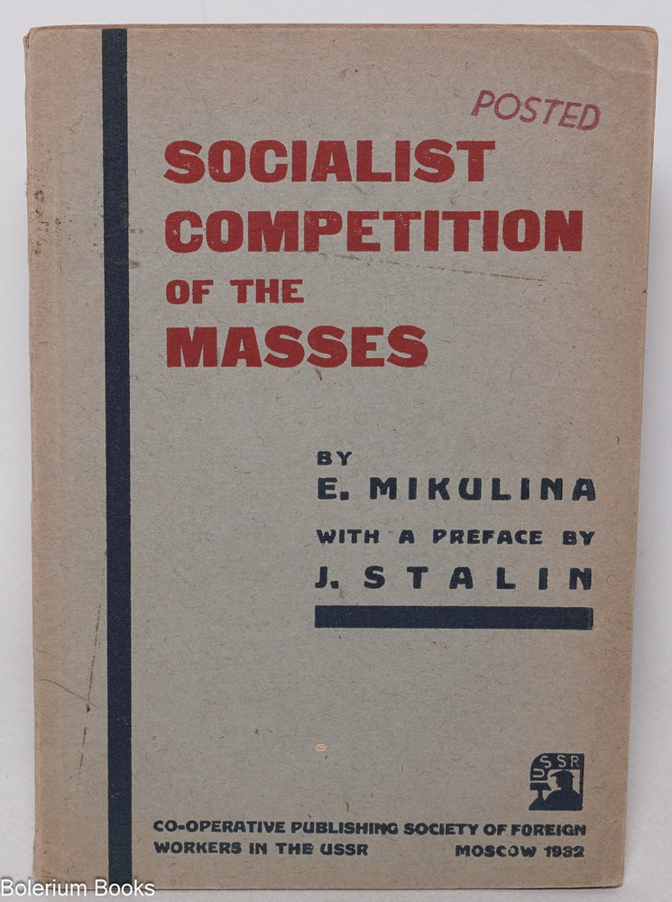
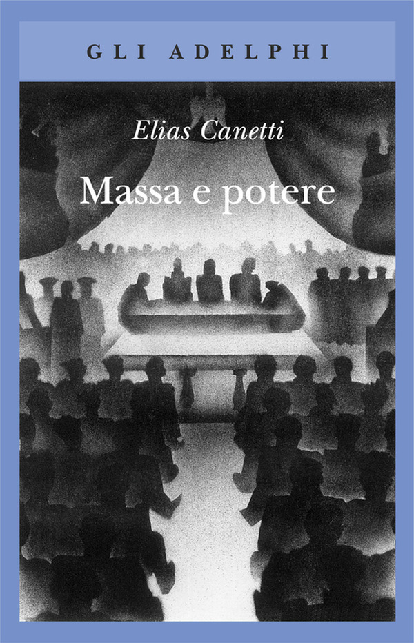
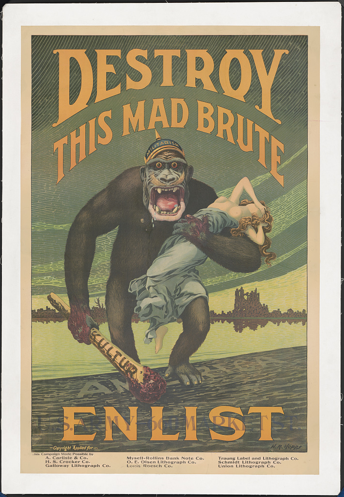
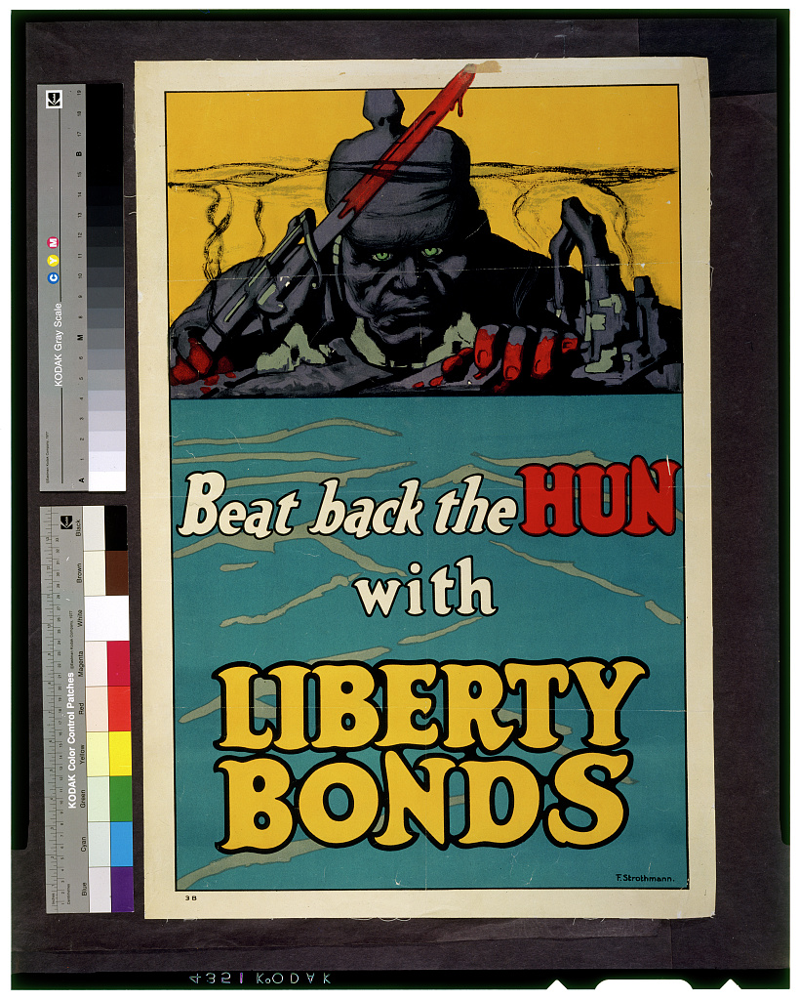
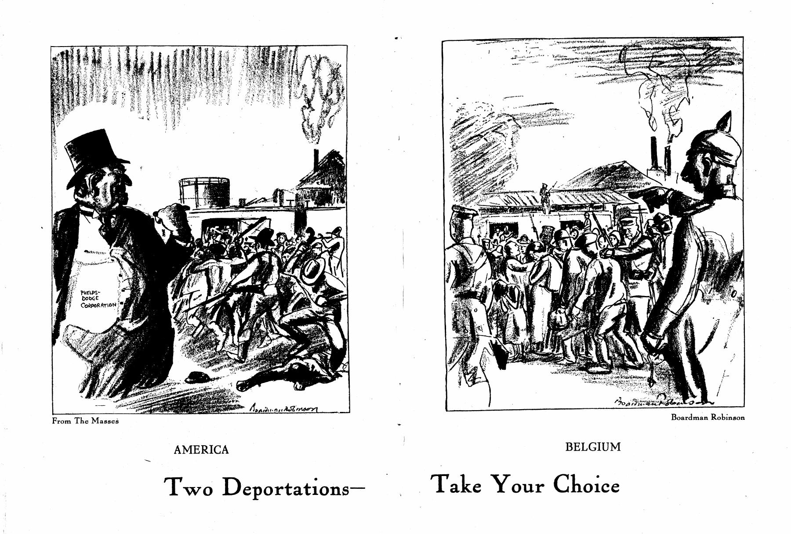
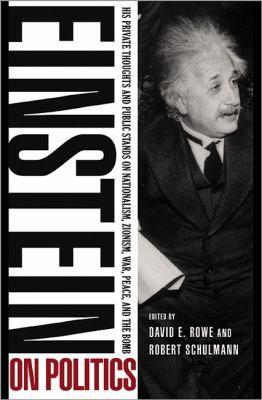
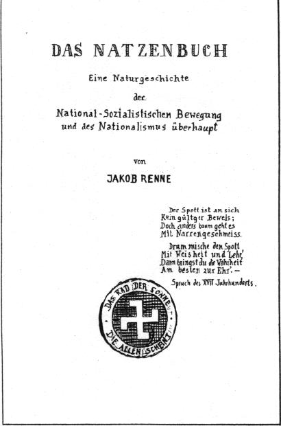
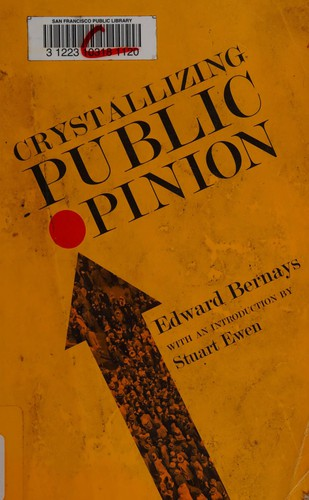
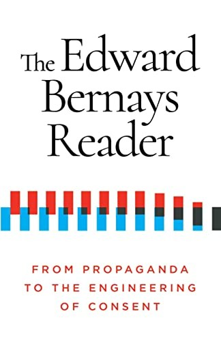

1:02:27 · 20 OPERE
I fautori della modernità (Parte II).
Il filo del discorso
La seconda parte dei Fautori della modernità segue il passaggio dalla società ottocentesca alle politiche della massa e alla propaganda organizzata. Il relatore accosta positivismo, correnti spiritualiste e nuove istituzioni sociali per discutere le contraddizioni di una modernità che proclama razionalità e libertà. Le Bon, Freud, Ortega e Canetti introducono poi modi diversi di pensare il comportamento collettivo, che non vengono ridotti a una sola teoria scientifica valida per ogni epoca. Lippmann e Bernays sono al centro della critica: attraverso libri, fotografie e manifesti della Grande guerra il relatore analizza la formazione delle rappresentazioni pubbliche e il loro uso politico. La documentazione richiede alcune distinzioni: il comitato Creel nacque dopo l’ingresso statunitense nel conflitto; il manifesto britannico di Kitchener precede Uncle Sam; riconoscere una caricatura propagandistica non cancella le violenze reali contro i civili. Ludlow, Ponce, Avola e Battipaglia entrano come esempi di repressione, mentre Kraus offre una lettura del rapporto fra beneficenza e disciplina del lavoro. Nicolai ed Einstein costituiscono il contrappunto pacifista, attraverso l’Appello agli europei del 1914; il successivo Natzenbuch di Nicolai rimase invece inedito. L’ultima parte segue Bernays dalla guerra alla pubblicità e alla campagna del tabacco, per arrivare alla responsabilità di chi produce conoscenza e di chi ne utilizza i risultati. I persuasori occulti di Packard chiude il percorso con un invito alla lettura critica. Il giudizio morale del relatore sui protagonisti resta distinto dai fatti riscontrati: insulti, paragoni religiosi e valutazioni dei volti non diventano prove sulle persone o sulle comunità.
I libri nel discorso

Psicologia delle folle
Copertina: Apogeo · 2025 · nuova traduzione dell’edizione integrale originale
Immagine autentica dell’opera, controllata visivamente; l’edizione di riferimento non è attribuita al filmato.
Le Bon e Psicologia delle masse/folle espliciti; opera originale Psychologie des foules, 1895. Conservato ID precedente senza nuova voce duplicata.
Passaggio 9:55 ↗ · Fonti e libro ↗Les Lois psychologiques de l’évolution des peuples
Copertina: Bellona · traduzione polacca Psychologia rozwoju narodów
Copertina autentica della traduzione polacca Psychologia rozwoju narodów, Bellona, ISBN 9788311177543, scaricata direttamente dall’editore. Il catalogo nazionale polacco associa questo ISBN al 2024, mentre la pagina editoriale consultata riporta una distribuzione successiva; perciò non si assegna un anno puntuale a questa immagine. La traduzione di Julian Ochorowicz è riscontrata dal catalogo nazionale. Non viene attribuita al video e non è una copertina francese del 1894.
Le leggi psicologiche dell’evoluzione dei popoli e Le Bon espliciti, 1894.
Passaggio 10:20 ↗ · Fonti e libro ↗
Il Principe
Copertina: Feltrinelli · 2013 · a cura di Ugo Dotti
Immagine autentica dell’opera, controllata visivamente; l’edizione di riferimento non è attribuita al filmato.
Il Principe e Machiavelli espliciti.
Passaggio 10:39 ↗ · Fonti e libro ↗
Psicologia delle masse e analisi dell’Io
Copertina: Einaudi, 2013
Freud, titolo e anno 1921 espliciti, analisi dell’Io normalizzata dalla trascrizione automatica.
Passaggio 12:26 ↗ · Fonti e libro ↗
La ribellione delle masse (La rebelión de las masas)
Copertina: Immagine dell’edizione spagnola Lucemar, catalogo Plutón, 19 febbraio 2026, 288 pagine, brossura. Opera pubblicata in volume nel 1930, dopo articoli del 1929.
Copertina autentica Lucemar, titolo nero e autore rosso su celle esagonali chiare, una cella rossa e un’ape. Edizione di riferimento 2026, non attribuita al filmato. I tentativi sul catalogo universitario e sull’immagine Planeta non hanno avuto esito; non si riporta il dato palesemente incongruo di tre pagine presente nella scheda Espasa.
Ortega y Gasset e La ribellione delle masse espliciti.
Passaggio 14:44 ↗ · Fonti e libro ↗
Socialist Competition of the Masses
Identificazione probabile
Copertina: Cooperative Publishing Society of Foreign Workers in the USSR · Moscow 1932
Fotografia autentica della copertina dell’esemplare Bolerium Books, inventario 346947. Titolo, E. Mikulina, prefazione J. Stalin, editore e Moscow 1932 sono leggibili. Timbro POSTED, usura e filigrana del libraio sono conservati senza ritocchi. Non è la scansione FAU, il cui PDF restava inaccessibile, né una copertina ricostruita. Nessun ISBN inventato e nessuna specifica copia attribuita al filmato.
Descrizione della competizione socialista delle masse, anno 1932 e prefazione di Stalin a 1035–1049 secondi. Nome Mikulina non pronunciato: identificazione probabile riscontrata catalograficamente, ora corredata da fotografia autentica dell’edizione inglese.
Passaggio 17:15 ↗ · Fonti e libro ↗
Massa e potere
Copertina: Adelphi · gli Adelphi · 2015
Copertina autentica controllata visivamente. Edizione di riferimento, non identificata come quella usata nel video.
Canetti, Massa e potere e anno 1960 espliciti, con richiamo al contatto e alle epidemie.
Passaggio 17:33 ↗ · Fonti e libro ↗Public Opinion
Copertina: Free Press · paperback 1997
Copertina autentica del paperback Free Press del 12 giugno 1997, per ISBN 9780684833279, distribuita da OpenLibrary. L’immagine reca il titolo, Walter Lippmann e una nuova prefazione di Ronald Steel. Non viene attribuita al libro mostrato nel video.
Titolo inglese Public Opinion, Walter Lippmann e anno 1922 espliciti.
Passaggio 19:08 ↗ · Fonti e libro ↗Walter Lippmann and the American Century
Copertina: Transaction Publishers · riedizione 1999
Copertina autentica della riedizione con nuova introduzione dell’autore, ISBN 9780765804648, distribuita da OpenLibrary. Il catalogo editoriale attuale è Routledge, che ha acquisito il marchio Transaction; la prima pubblicazione resta quella del 1980. La copia utilizzata nel video non è identificata.
Ronald Steel, Walter Lippmann and the American Century, data 1999 e titolo del prologo espliciti; prima edizione corretta 1980.
Passaggio 20:11 ↗ · Fonti e libro ↗
Propaganda
Copertina: Apogeo · Saggi, marzo 2026 · traduzione e redazione Aldo Ballerini
Copertina autentica dell’edizione Apogeo del marzo 2026, successiva alla registrazione del video: è un riferimento bibliografico attuale, non l’esemplare citato nel filmato. Titolo originale dell’opera Propaganda, 1928.
Propaganda di Bernays nominato qui, poi titolo, anno 1928 e lettura a 3070–3132.
Passaggio 23:05 ↗ · Fonti e libro ↗
I Want You for U.S. Army: Nearest Recruiting Station
Manifesto originale del 1917, Library of Congress: Library of Congress · originale del 1917
Facsimile autentico e intero del manifesto conservato alla Library of Congress, record 96507165, file ppmsc.03521. È un manifesto storico, non una copertina di libro. Titolo, firma e margini originali sono visibili. La data e l’identificazione sono quelle del catalogo primario, non di una ristampa commerciale.
Uncle Sam, slogan I Want You for U.S. Army e Flagg espliciti: manifesto originale.
Passaggio 27:28 ↗ · Fonti e libro ↗
Destroy This Mad Brute: Enlist
Identificazione probabile
Manifesto storico, Library of Congress: Library of Congress · manifesto, circa 1917
Facsimile autentico e intero della Library of Congress, record 2010652057, file ds.03216. La Bancroft Library registra un esemplare datato circa 1917. L’immagine conserva i margini originali e il testo: manifesto, non copertina commerciale.
Slogan tradotto e dettagli gorilla, elmo Militarism e clava Kultur identificano il manifesto di Hopps; autore riscontrato dal catalogo.
Passaggio 28:08 ↗ · Fonti e libro ↗
Beat Back the Hun with Liberty Bonds
Identificazione probabile
Manifesto originale con scala della ripresa archivistica: Library of Congress · manifesto del 1918
Facsimile autentico della Library of Congress, record 94505100, file cph.3g02950. Sono conservati il manifesto intero, la scala cromatica e i riferimenti della ripresa archivistica; nessun ritocco che li trasformi in una copertina. Data e autore riscontrati anche alla NYPL.
Titolo tradotto Sconfiggi l’unno con l’acquisto dei Liberty Bonds e composizione identificano il manifesto di Strothmann.
Passaggio 29:41 ↗ · Fonti e libro ↗Britons: Lord Kitchener Wants You. Join Your Country’s Army! God Save the King
Identificazione probabile
Manifesto britannico del 1914, da fotografia IWM: Imperial War Museum · documento del 1914, copia digitale documentata
Riproduzione del manifesto Kitchener, fotografia IWM Q 48378A, da Wikimedia Commons. L’opera è verificata indipendentemente nel catalogo Hoover Poster UK 473 e nel catalogo IWM Art. PST 2734. Riproduzione del manifesto dalla fonte indicata.
Slogan Join Your Country’s Army e God Save the King; il personaggio è erroneamente identificato come re Giorgio. Il catalogo riscontra Kitchener, opera di Leete.
Passaggio 32:11 ↗ · Fonti e libro ↗
Two Deportations—Take Your Choice
Opera grafica completa, riproduzione coeva ISR, settembre 1917: International Socialist Review · riproduzione coeva, settembre 1917
Scansione autentica della doppia composizione grafica riprodotta nell’International Socialist Review, vol. 18, n. 3, settembre 1917, pagina PDF 35. La figura comprende entrambe le scene, America e Belgio, titolo completo, firma e credito From The Masses. È una riproduzione coeva dichiarata di un’opera grafica, non la copertina del fascicolo né un libro autonomo. Il PDF completo resta privato.
Titolo Two Deportations—Take Your Choice e The Masses espliciti; autore riscontrato nella riproduzione coeva firmata.
Passaggio 43:04 ↗ · Fonti e libro ↗
Aufruf an die Europäer (Appello agli europei)
Copertina di Einstein on Politics, raccolta contenente il manifesto: Princeton University Press · raccolta Einstein on Politics, paperback 2013
Copertina autentica di Einstein on Politics, a cura di David E. Rowe e Robert Schulmann, Princeton University Press, paperback 2013, distribuita da OpenLibrary per ISBN 9780691160207. Il manifesto è riprodotto nella sezione che inizia a pagina 64 dell’estratto editoriale. È dichiarata la copertina della raccolta documentaria, non una copertina del manifesto del 1914 o del volume Nicolai del 1921.
Titolo Aufruf an die Europäer e traduzione Appello agli europei, Nicolai e Einstein espliciti; firmatari completi riscontrati.
Passaggio 47:04 ↗ · Fonti e libro ↗
Das Natzenbuch. Eine Naturgeschichte der National-Sozialistischen Bewegung und des Nationalismus überhaupt
Identificazione probabile
Frontespizio del manoscritto inedito, pseudonimo Jakob Renne: Frontespizio del manoscritto · riprodotto nel catalogo Tübingen, p. 110
Frontespizio autentico del manoscritto con titolo, sottotitolo e pseudonimo Jakob Renne. Estratto geometricamente dal facsimile riprodotto nella pagina a stampa 110, pagina PDF 121 del catalogo Im Vorfeld des Massenmords, senza ricostruzione o ritocco del documento. Non è una copertina commerciale e non ha ISBN. Il simbolo storico è parte della satira antinazista del manoscritto: l’opera non è presentata come propaganda nazista.
Titolo tedesco reso approssimativamente dalla trascrizione automatica e argomento del nazionalismo identificano Das Natzenbuch di Nicolai: manoscritto inedito, non volume pubblicato.
Passaggio 47:53 ↗ · Fonti e libro ↗
Crystallizing Public Opinion
Copertina: Ig Publishing · ristampa 2011
Copertina autentica della ristampa Ig Publishing con introduzione di Stuart Ewen, ISBN 9781935439264, distribuita da OpenLibrary. È una scansione di un esemplare bibliotecario con etichetta di collocazione, non una grafica creata dal trascrittore. L’editore registra agosto 2011; nessuna edizione è attribuita al video.
Titolo tradotto Cristallizzare l’opinione pubblica, Bernays e anno 1923 espliciti.
Passaggio 50:48 ↗ · Fonti e libro ↗
The Engineering of Consent
Copertina della raccolta The Edward Bernays Reader, 2021: Ig Publishing · The Edward Bernays Reader, raccolta 2021
Copertina autentica della raccolta The Edward Bernays Reader: From Propaganda to the Engineering of Consent, Ig Publishing, 27 luglio 2021, ISBN 9781632462046, distribuita da OpenLibrary. L’editore dichiara di includere il testo integrale dell’articolo del 1947: è la copertina di una raccolta contenente il saggio, non una copertina autonoma del 1947 e non il volume del 1955. L’ISBN appartiene alla raccolta, non all’articolo.
Titolo tradotto L’ingegneria del consenso e anno 1947 espliciti; articolo distinto dal volume omonimo 1955.
Passaggio 52:21 ↗ · Fonti e libro ↗
I persuasori occulti
Copertina: Einaudi · ET Saggi · 2015 · traduzione di Carlo Fruttero
Immagine autentica dell’opera, controllata visivamente; l’edizione di riferimento non è attribuita al filmato.
Titolo I persuasori occulti e nome Vance Packard espliciti, grafia nella trascrizione automatica Vince normalizzata.
Passaggio 1:00:20 ↗ · Fonti e libro ↗Fonti e approfondimenti (26)
- academic.oup.com ↗
- assets.press.princeton.edu ↗
- bibulyon.hypotheses.org ↗
- digitalcollections.hoover.org ↗
- digitalcommons.fau.edu ↗
- dlib.nyu.edu ↗
- docs.pr.gov ↗
- ead-pdfs.library.yale.edu ↗
- einstein-virtuell.mpiwg-berlin.mpg.de ↗
- fdr.artifacts.archives.gov ↗
- guides.loc.gov ↗
- journals.sagepub.com ↗
- legislature.camera.it ↗
- miyazaki-u.repo.nii.ac.jp ↗
- news.yale.edu ↗
- publikationen.uni-tuebingen.de ↗
- archives.gov ↗
- avm-verlag.de ↗
- bu.edu ↗
- geschichte.be ↗
- igpub.com ↗
- loc.gov ↗
- marxists.info ↗
- nps.gov ↗
- presidency.ucsb.edu ↗
- prmuseum.org ↗